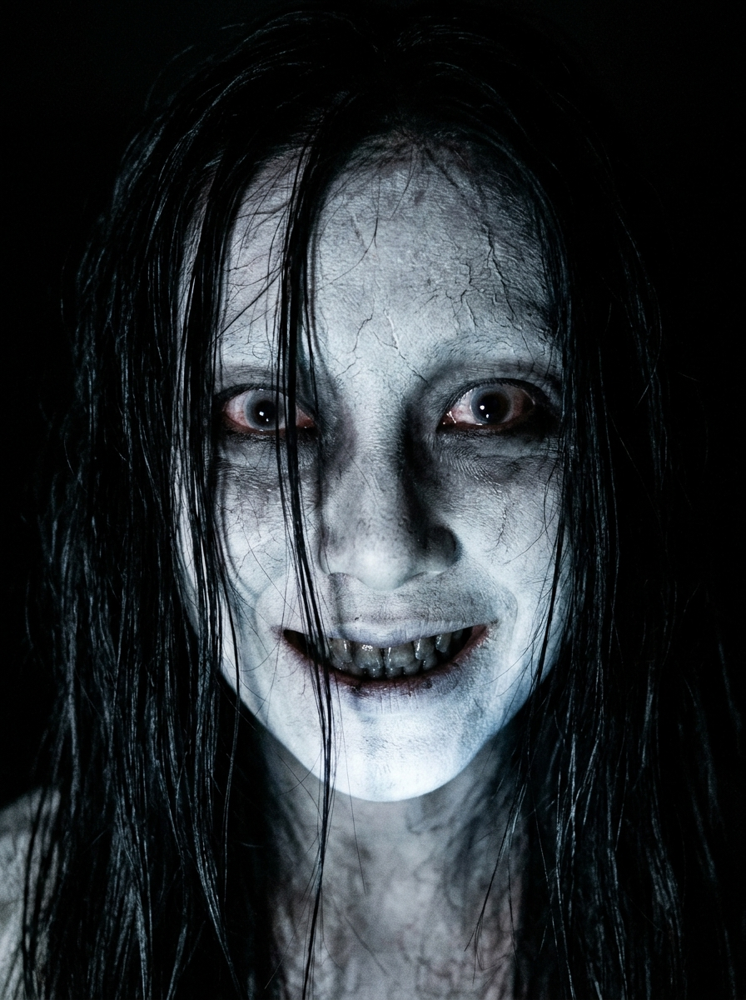
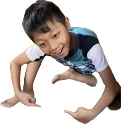

沉罐毳本人膚色很黑，而且非常怕黑。他被困在伸手不見五指的黑暗裡，快在 60 秒內找到他！
👁 微弱線索：每次點錯他都會嚇到換位子！黑暗中會同時閃過 0.12 秒的眨眼微光——其中一個是沉罐毳，另一個可能是陷阱！
⚠ 限時 60 秒求生：點錯幾次沒關係，但每次點錯都會引來不同女鬼貼臉驚嚇；時間歸零仍未救出即救援失敗！


三次機會全數用盡。沉罐毳依然被困在無盡的黑暗之中，而女鬼已經找上你了……